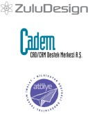
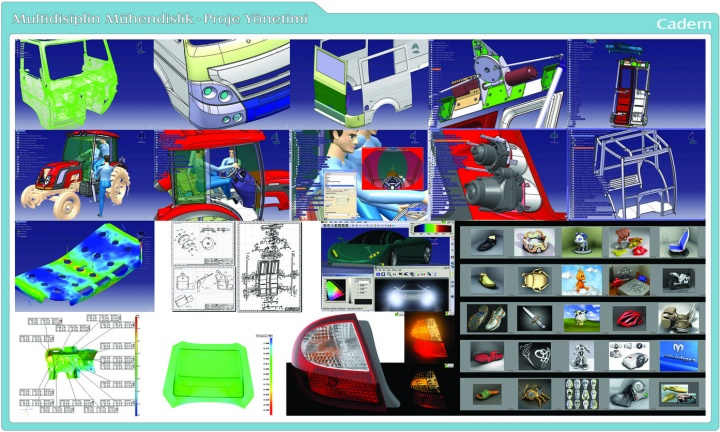
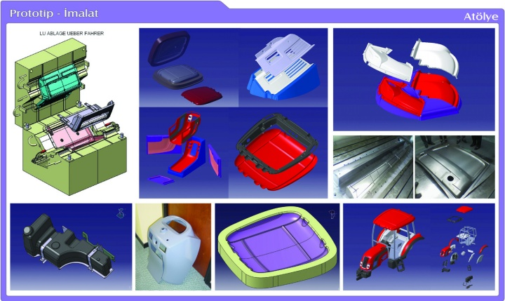
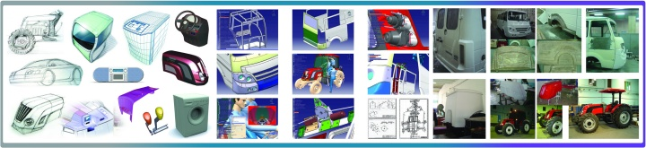

|
Zafer Uluçay
ZuluDesign
Kasým 2005, Ýstanbul
Not: Ýlk defa TurkCADCAM.net Dergisi 1. Sayýsýnda (Ocak-Þubat 2006) yayýnlanan bu makale, yüksek çözünürlüklü resimlerle birlikte Aralýk 2008'de TurkCADCAM.net Portalý'ndan yayýna baþlamýþtýr.
Bu yazýda ETMK ADesign Fair 2005 Yýlýn Genç Tasarýmcýsý Ödülü'nü kazanan Zafer Uluçay'ýn, proje ortaklarýyla yürüttüðü çeþitli tasarým çalýþmalarý hakkýnda bilgi ve fotoðraflar bulunmaktadýr. Zafer Uluçay bu ödüle, tasarým sürecinin baþýndan sonuna izlediði çalýþma yöntemiyle tüm tasarýmcý adaylarýna örnek teþkil etmesine ek olarak, çalýþma verimliliði, azmi ve iþ kalitesinden dolayý layýk görülmüþtür.
Giriþ:
Endüstriyel ürün tasarýmý ülkemizde yýldýzý yeni yeni parlayan, hatta parladýðý artýk iyice belirli olmaya baþlayan bir meslek ve hizmet þekli.
Üreticinin yeni gelir kapýsý ve pazarlamacýnýn da en büyük silahý bu meslek. "Pazar" denilen bu imkan birlikteliðinin sýnýrlarýna baðlý kalmayan, doðru kullanýlýr ise "yeni pazarlar" açabilen bir meslek bu.
Bu yýldýzýn parlamaya baþladýðý ülke, tasarým ve ürün geliþtirmesi tamamlanmýþ, marka sahibi olan ürünlerin imal edildiði, atölye ülke olmaktan çýkýp kendi markasýný oluþturan, ürün geliþtirme yapan ve kendi ürünlerini ihraç etmeye baþlayan korkulan ülke olmuþtur.
Ülkemizde endüstriyel tasarýmýn endüstrimiz içinde hakkýyla kullanýlmasý çok da eskilere dayanmýyor. Önceleri atölye ülke idik. Pastanýn büyük dilimi hep yabancý lisansör firmalara gidiyordu. Bu pastadan daha fazla pay istemenin en doðru ve kararlý yolu endüstriyel tasarým ve ürün geliþtirme idi. Lisans sürelerinin dolmasý, yeni model ürünlerin çok geliþmiþ olmasý ve kýzýþan rekabet bu süreyi kýsalttý. Bütün sektörel üretimler daha dinamik olmaya baþladý.
ZuluDesign çalýþanlarý Koç Grubu'nda yetiþti. Otomotiv haricinde kahverengi ve beyaz eþyada, küçük ev aletlerinde çok tecrübeli. Global pazarda kabul görmüþ tasarým sürecini uygulamakta. Pazar araþtýrmasý, beyin fýrtýnasý... konsept tasarýmý, mevcut ürün gamýna yeni ürün tasarýmýndan, yeni ürün gamý tasarýmýna kadar hizmet veriyoruz. Görünüþ prototipleri hazýrlýyoruz. Kurumsal kimlik ve marka oluþturma, ürün grafikleri ve ambalaj grafikleri hizmet sýnýrlarýmýz içerisinde.
ZuluDesign - Cadem A.Þ. - Atölye A.Þ. iþbirliði:
Otomotiv örneði vermek gerekirse, Otokar, BMC, Temsa gibi firmalar kendi markalarýyla araç imalatýna giriþti. Ana sanayi yan sanayiyi co-designer olmaya zorladýkça endüstriyel tasarým ve ürün geliþtirme hýzlýca yeni projelere baþladý. Bu ihtiyaca tam olarak cevap vermek üzere yapýlanan ZuluDesign - Cadem A.Þ. - Atölye A.Þ. Türkiye' de iki baþarýlý projeye imza attý. Üç firma her biri kendi alanlarýnda uzman ve tecrübe sahibi. Hedef yurt dýþýna da tasarým ve ürün geliþtirme hizmeti vermek.
En son teknolojileri kullanýyoruz ve sonuca ulaþma süremizi en aza indiriyoruz.
Alýþýlagelmiþ yöntemler ile ileri teknoloji bir arada; Eskizlerimizi hem kaðýda hem de tablete çiziyoruz. Hýzlý prototipleme sistemleriyle gerekli testleri projenin çok erken safhalarýndan itibaren yapabiliyoruz. Bu modelleri kendi atölyemizde el ile de yapabiliyoruz. Proje boyutu ve süresi model imalatýmýza yön veriyor.

Cadem A.Þ. bünyesinde bulunan optik 3D tarama cihazýndan aldýðýmýz STL data üzerine yaptýðýmýz yüzey çalýþmalarýmýz, tasarýmlarýmýzýn konsept aþamasýndan üretim bantýna sorunsuz olarak uyarlanmasýný saðlýyor.
Eþ zamanlý çalýþýyoruz. Tasarýmcýlar ile mühendisler projenin her aþamasýnda birlikteler. Proje süresince "geri dönüþ" dediðimiz zaman kayýplarýný en aza indirmiþ durumdayýz.
Tasarýmcýlar ön seri imalat dahil seri imalata kadar projelerden sorumludurlar.
Ortak projelerimizde otomotiv sektöründe de en çok kullanýlan program olan CATIA'nýn, ergonomi dahil bütün modüllerini en verimli þekilde kullanýyoruz

Atölye A.Þ.'nin fonksiyonel prototip ve özellikle kompozit malzeme konusundaki birikimleri, otomotivde sacdan kompozite geçiþte büyük kolaylýk saðladý. Atölye A.Þ. çok hýzlý þekilde CNC tezgahlarla model iþleme imkanlarýna sahip.

Bu iþbirliði ile multidisiplinli araç tasarýmý, mühendisliði ve prototiplemesini tek elden yapabiliyor ve projelerimizi daha kýsa sürede baþarýyla sonuçlandýrabiliyoruz.
Türkiye'nin sesini Dünya'ya endüstriyel tasarým ile duyurmaya çalýþmak hedeflerimizden birisidir. Bu hedefe Karsan için yenilenen Peugeot J9 Premier aracý ile biraz yaklaþtýk. Görünüþünü yenilediðimiz aracýn tasarým onayýný Fransa Peugeot verdi.
Önümüzdeki günlerde Türkiye'deki tasarým ve ürün geliþtirme ihtiyacýnýn, Dünyadaki yenilikçi ürünlere talep eðilimi ile artacaðýna inanýyoruz.
Aþaðýda, ETMK ADesign Fair 2005 Yýlýn Genç Tasarýmcýsý Ödülü seçmeleri için göz önünde bulundurulmuþ olan, endüstriyel tasarýmý ZuluDesign tarafýndan gerçekleþtirilmiþ üç ürün hakkýnda detaylý bilgi ve resimler bulunmaktadýr.
|